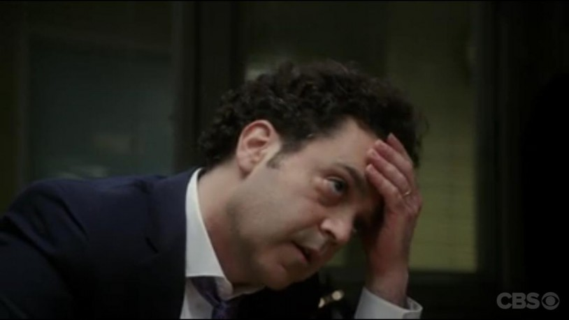

#3439 My One and Only - Auf der Suche nach Mr. Right
Alternativ: My One and Only


 IMDB-Wertung: 6.6 / 10
IMDB-Wertung: 6.6 / 10  Metascore: 0
Metascore: 0 
In den Fünfzigerjahren ist Amerika noch voll von Träumern, die sich auf der Suche nach dem großen Glück durchs Leben treiben lassen. Das Glamourgirl Anne Devereaux ist einer von ihnen. Sie reist an der Ostküste von Stadt zu Stadt, um endlich einen reichen Mann zu finden, der sich bereit erklärt, ihren ausschweifenden Lebensstil und ihre beiden Söhne zu finanzieren. (Text: Lovefilm)
Jahr: 2009
Dauer: 107 Minuten
FSK:
Land: USA Studio: Freestyle ReleasingTonspuren: DTS - ,
Untertitel: Deutsch, Englisch,
Auflösung: 1080p (1920x816) Größe: 8488 MB
Genre: Drama, Komödie, Abenteuer, Liebe, Biographie
Regisseur: Richard Loncraine
Drehbuch: Jake LaMotta
Soundtrack:
Darsteller:
 Renée Zellweger als Anne Devereaux
Renée Zellweger als Anne Devereaux Logan Lerman als George Devereaux
Logan Lerman als George Devereaux Kevin Bacon als Dan Devereaux
Kevin Bacon als Dan Devereaux Troy Garity als Becker
Troy Garity als Becker David Koechner als Bill Massey
David Koechner als Bill Massey J.C. MacKenzie als Tom
J.C. MacKenzie als Tom- Eric McCormack als Charlie
 Chris Noth als Dr. Harlan Williams
Chris Noth als Dr. Harlan Williams Molly C. Quinn als Paula
Molly C. Quinn als Paula- Mark Rendall als Robbie
 Nick Stahl als Bud
Nick Stahl als Bud- Phoebe Strole als Wendy
 Steven Weber als Wallace McAllister
Steven Weber als Wallace McAllister Robin Weigert als Hope
Robin Weigert als Hope- Dan John Miller als Car Salesman #1
- Thomas C. Hessenauer als Henry the Doorman
- Rachel Specter als Sherry
- Aidan Hughes als Boston Maitre D'
 Rosemary Knower als Old Woman
Rosemary Knower als Old Woman Veronica Taylor als Nancy
Veronica Taylor als Nancy- Michael Mack als Butler
- Clay Steakley als Stage Manager
- Anthony Addabbo als Frank
- Tara Garwood als Diner Woman
- Bobby J. Brown als Diner Man
 Indra Ové als Diner Waitress
Indra Ové als Diner Waitress- Chris Kies als Painter Ted
-  Maury Ginsberg als Mr. Dillon
- John B. Crye als Assistant Director
- Tony Abatemarco als Director
- Jennifer Christopher als Candy / Mary Beth
 Bill Allen als Medic
Bill Allen als Medic- Leigh Martin als Garden Party Guest
 Christie Beran als Party Attendant , uncredited
Christie Beran als Party Attendant , uncredited- Eric Buarque als Waiter , uncredited
- Jean-Paul Chreky als Charlie's Guest , uncredited
- Estefania Crespo als Charlie's Guest , uncredited
- Kirk Curran als Teenage Boy , uncredited
- Christian Di Salvo als Slave , uncredited
- Camilla Dominguez als Diner Rollerskater , uncredited
 Kirk Lambert als Truck Driver , uncredited
Kirk Lambert als Truck Driver , uncredited- Tony Moore als Factory Worker , uncredited
- Jennifer Rouse als Cocktail Waitress , uncredited
 Patrick Michael Strange als Pitt Worker / New Yorker , uncredited
Patrick Michael Strange als Pitt Worker / New Yorker , uncredited- Don Whatley als Bar Patron , uncredited
- J.D. Wine als Piano Player in Lounge , uncredited
- Joe Tunney als Car Salesman #2
- Gwendolyn Briley-Strand als Bernice
- Holly Palmer als Tanya, Blond Singer
- Jerry Whiddon als NYC School Principal
Datei: X:\2009(G-M)\My One and Only - Auf der Suche nach Mr. Right (2009, FSK, 1920x816).mkv seit 07.04.2016
Festplatte: HD 2009(G-Z)-2010(A-F)
 Es gibt insgesamt 82 Filme in der Gruppe '2009(G-M)'
Es gibt insgesamt 82 Filme in der Gruppe '2009(G-M)'